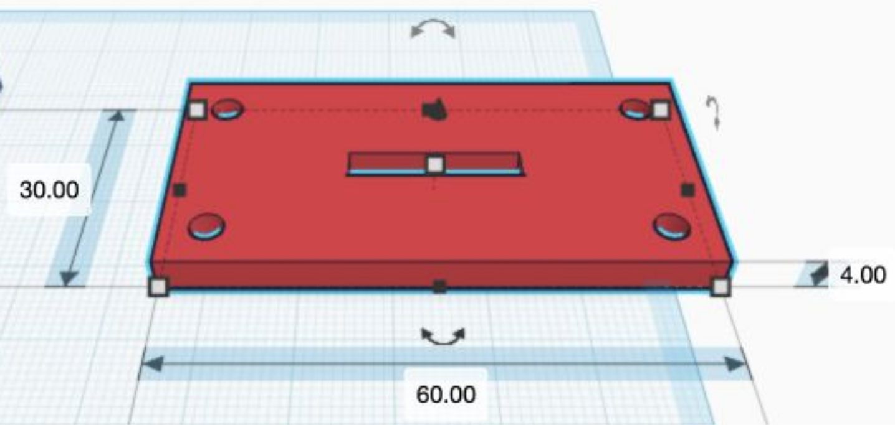
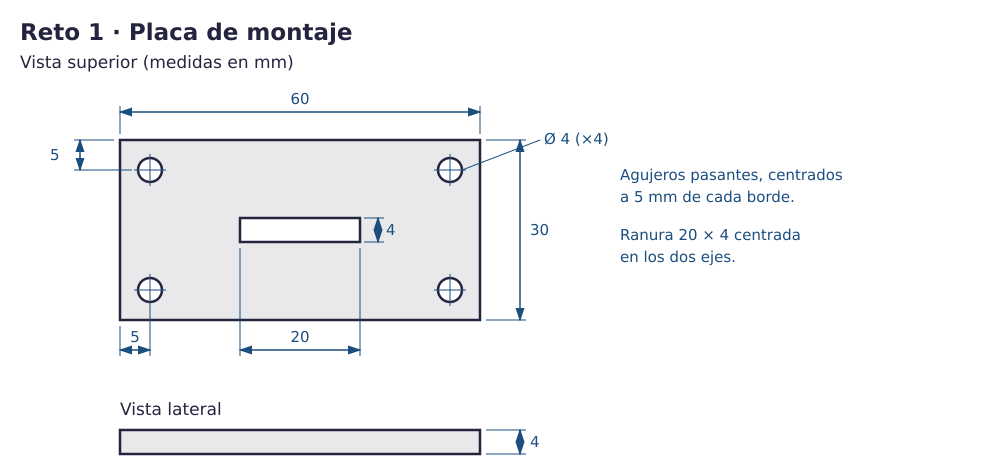

Contenido
Lo que vas a conseguir
Una placa de montaje: una pieza plana con cuatro agujeros para tornillos y una ranura central, como las que sujetan un objeto a una pared. Es tu primer reto evaluable: lo construyes tú, siguiendo un plano.

1. Leer un plano
Un plano es un dibujo con todas las medidas necesarias para construir una pieza. Cada medida se llama cota y va en milímetros. El símbolo Ø significa diámetro.

2. Una herramienta nueva: la Regla
Hasta ahora has escrito tamaños. Para colocar una forma en un sitio exacto necesitas la Regla: una escuadra verde que pones en una esquina de la pieza y que te dice a qué distancia está cada forma.
- Pulsa el botón Regla de la barra de herramientas (o la tecla R) y haz clic en la esquina de abajo a la izquierda de tu placa. Aparece la escuadra verde.
- Selecciona cualquier forma: además de su tamaño, verás su distancia a la Regla en los dos ejes.
- Haz clic en una distancia, escribe el valor y pulsa Intro: la forma se coloca en ese sitio.
- Para quitar la Regla, pasa el ratón por encima y pulsa la ✕ que aparece junto a ella.

Ahora tú (sin nota). Crea una placa de 20 × 20 × 4 y pon la Regla en su esquina. Añade un cilindro hueco de Ø4 cuyo centro esté a 5 mm de los dos bordes.
Compruébalo: las distancias a la Regla tienen que ser 3 y 3 (el borde del cilindro), no 5 y 5.
3. Construye el reto 1
- Crea un diseño nuevo y llámalo reto1.
- Placa: un cubo de 60 × 30 × 4, con elevación 0.
- Pon la Regla en la esquina de abajo a la izquierda de la placa.
- Primer agujero: cilindro de 4 × 4, 6 mm de alto, en Hueco y con elevación −1. Así sobresale 1 mm por arriba y por abajo y atraviesa seguro. Colócalo con distancias a la Regla 3 y 3.
- Los otros tres: selecciona el agujero, pulsa Ctrl + D (duplicar) y escribe sus distancias a la Regla: (53, 3), (3, 23) y (53, 23).
- Ranura: un cubo de 20 × 4, 6 de alto, en Hueco y con elevación −1. Selecciona la placa y la ranura, pulsa Alinear y haz clic en los puntos centrales de ancho y fondo.
- Selecciónalo todo y pulsa Agrupar.
Piensa. ¿Por qué el segundo agujero va a 53 mm de la Regla y no a 55?
Ver respuesta
Su centro tiene que estar a 55 mm (60 − 5). La Regla mide hasta su borde, que está 2 mm antes: 55 − 2 = 53.
4. Comprueba tu placa
- Con la Regla: la placa mide 60 × 30 × 4.
- Desde abajo: se ven las cinco aberturas (cuatro agujeros y la ranura).
- La ranura empieza a 20 mm del borde corto y a 13 mm del largo: (60 − 20) / 2 = 20 y (30 − 4) / 2 = 13.
| Si te pasa esto… | Prueba esto |
|---|---|
| Un agujero está a 7 mm del borde | Pusiste su borde a 5 en vez de su centro. Su distancia a la Regla debe ser 3. |
| Desde abajo no se ve un agujero | Ese hueco no empieza por debajo de la placa: elevación −1 y altura 6. |
| La ranura está descentrada | Selecciona placa y ranura y vuelve a alinear por los centros. |
Tinkercad guarda solo. Todavía no exportes: entregarás los tres retos juntos al final del reto 3.
Compruébalo
Antes de seguir, decide si cada frase es verdadera o falsa.
00:00: